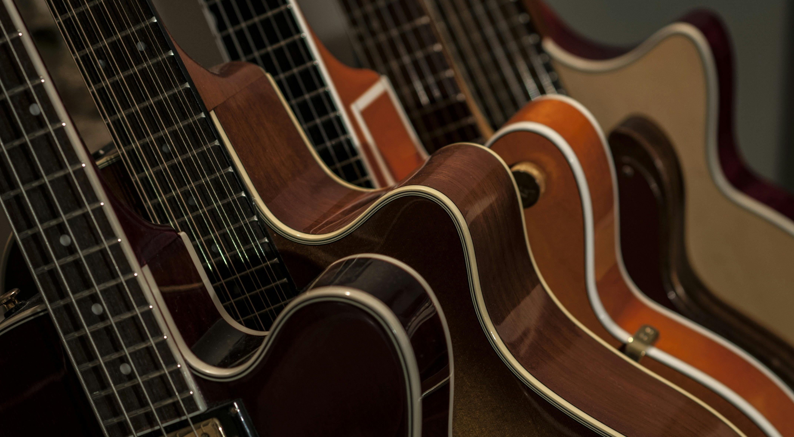
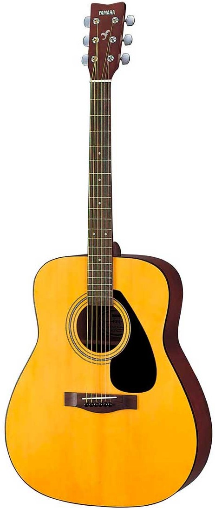
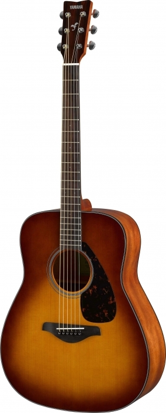
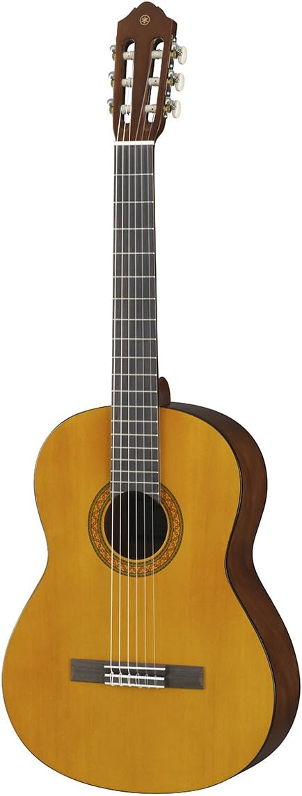
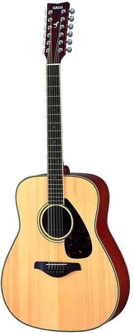
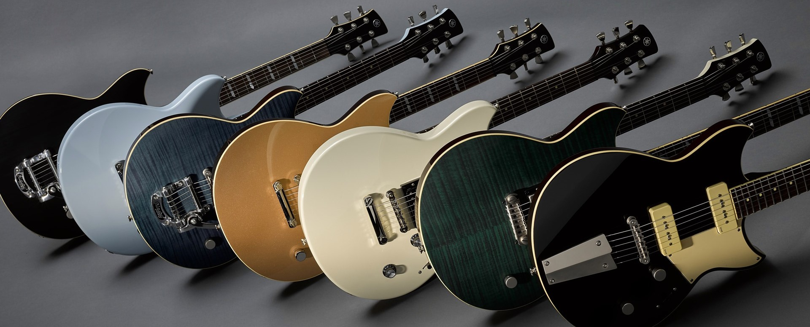
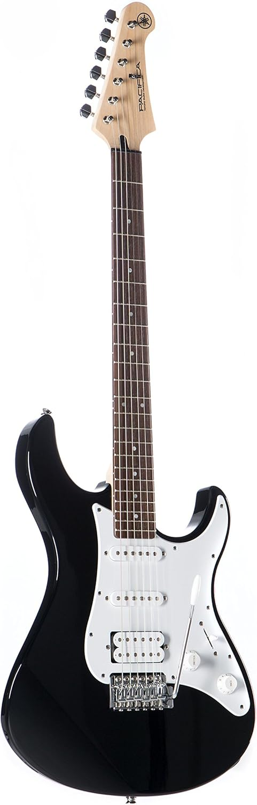
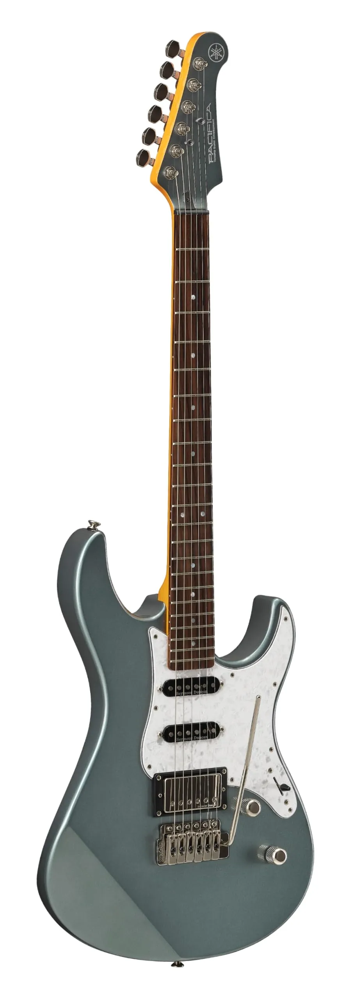
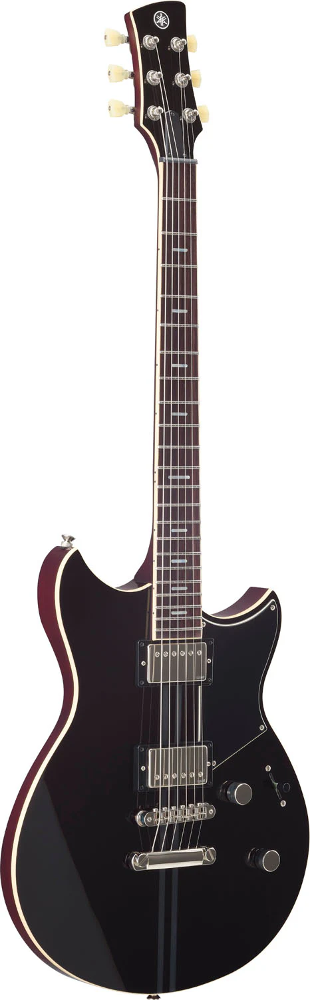
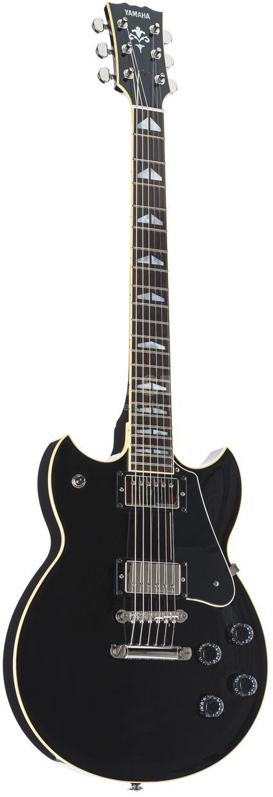

Catálogo de Guitarras

escrito por: Daniel Sanchez
Las guitarras Yamaha son reconocidas mundialmente por ofrecer instrumentos de alta calidad con una excelente relación entre precio y rendimiento. La marca ha desarrollado modelos para principiantes, músicos intermedios y profesionales, manteniendo un estándar de fabricación sólido en cada una de sus líneas.
Uno de los aspectos más destacados de Yamaha es su calidad de construcción. Sus instrumentos son elaborados con materiales seleccionados cuidadosamente, utilizando diferentes tipos de maderas según el sonido y características que busca cada modelo. Además, la marca presta especial atención a la comodidad del músico, creando diseños ergonómicos, acabados modernos y estructuras resistentes que garantizan durabilidad y buen desempeño tanto en práctica como en presentaciones en vivo.
Guitarras Acusticas
Las guitarras acústicas Yamaha destacan por su sonido equilibrado, comodidad y gran calidad de fabricación. Son instrumentos diseñados para ofrecer una buena proyección sonora y una experiencia cómoda al tocar. Gracias a su variedad de modelos, pueden adaptarse a diferentes estilos musicales y niveles de experiencia.
La marca utiliza distintos tipos de maderas y técnicas de construcción para mejorar la resonancia y brindar un sonido cálido y definido. Estas características han convertido a las guitarras acústicas Yamaha en una opción popular entre músicos de todo el mundo.

Yamaha F310

Yamaha FG800

Yamaha C40

Yamaha FG720S
Guitarras Electricas

Las guitarras eléctricas Yamaha son conocidas por su versatilidad y capacidad para adaptarse a distintos géneros musicales. Sus diseños combinan elementos clásicos y modernos para ofrecer comodidad, estabilidad y una amplia variedad de sonidos.
La marca desarrolla instrumentos pensados tanto para principiantes como para músicos profesionales, incorporando materiales de calidad y configuraciones de pastillas que permiten obtener sonidos adecuados para rock, blues, jazz, pop y otros estilos.

Yamaha Pacifica 012

Yamaha Pacifica PAC612

Yamaha Revstar RSS20
